战略设计阶段
领域对象-界限 上下文
即业务是属于哪块，电商领域，保险领域，零售领域，又可细化分为子领域。如电商下（订单交易领域、库存领域、会员领域、物流领域....）
限界 细胞壁
接下来要咬文嚼字一些了。 1、从“限界”二字来说。限界上下文明确了业务范围和职责边界。针对上面问题“子域中不是已经有边界的概念了么”。可以思考一个有意思的事，子域有边界，还是说因为有了边界才有子域。听到过一个非常到位的类比：如果没有细胞壁，如何定义细胞质?
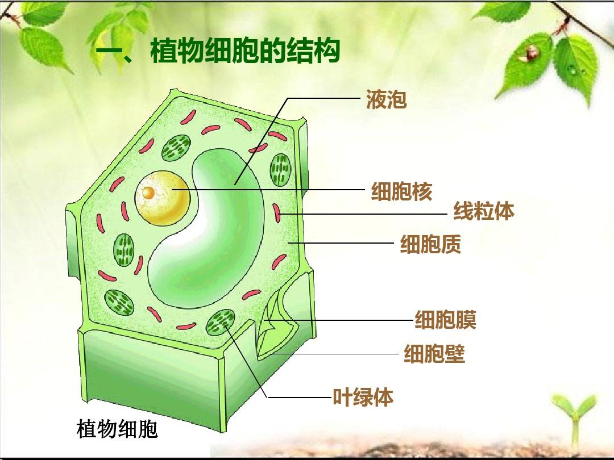
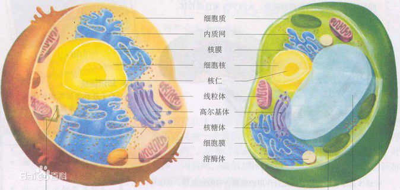

界限上下文
2、从“上下文”来说。上下文关注的是两个系统交互时的环境，或者说语境。 举个例子：小学是一个子域，中学是一个子域。升学这个事件动作则要上下文表达。 通用语言要在限界上下文（语境）中保证其明确意义。举个例子，商家管理上下文中，我们(平台)说的用户指的是商家而不是买家，支付上下文中，我们以支付单为核心，语境无需引入物流单、库存等词汇。 通常来说，我们可以近似地认为子域和限界上下文一一对应的。
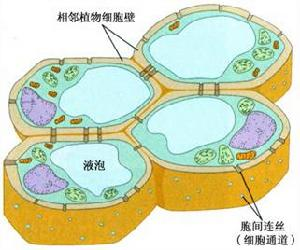
血液与组织细胞之间的气体交换是血液中的氧气经气体扩散进入组织细胞，组织细胞进行呼吸作用产生的二氧化碳扩撒进入血液．因此血液中的氧气减少．二氧化碳增多，由动脉血变为静脉血．组织里的气体交换如图．
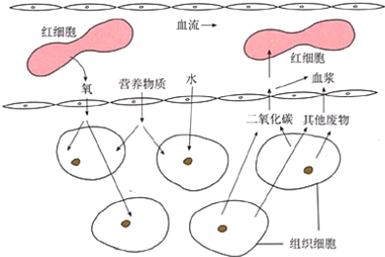
实体Entity：
有唯一业务标识
有自己的业务属性和行为
属性可变，有自己的生命周期
值对象：
可以有唯一业务标识
特征
描述和度量
- 不变性 初始化后不修改，除构造函数无Setter
- 概念整体
- 可替换
- 值对象相等性
- 无副作用行为
有自己的业务属性和行为
一旦定义不可改变
二者的关系
二者的关系可总结为：值对象关心对象是什么样的，实体侧重描述对象是哪个？
提到有自己的业务属性和行为这块，想想这不就是我们年轻时说的面向对象编程的思想码？
但是回顾一下会发现，这个思想好像被很多人抛诸脑后很久了，定义的对象类都成了一个个的pojo，只有属性和属性对应getter和seter方法，也就是ddd中所说的失血模型。
失血模型：只含属性和对应的getter/setter方法，无业务处理逻辑
贫血模型：包含不依赖持久化的部分领域逻辑，依赖持久的逻辑被放在领域服务层。
充血模型：绝大数业务逻辑都放在其中，包括持久化逻辑。少数不适合的逻辑被提取出来放在领域服务层中。
胀血模型：主张不需要领域服务层，把一些业务逻辑都放在模型对象中处理
领域服务 细胞—>组织
胀血模型主张把所有的业务逻辑放在模型中处理，
但是事实上有些逻辑并不是适合放在某个领域对象中处理。比如
- 1、领域对象间的转换
- 2、某些场景下需要多个领域对象作为输入值，结果产生一个值对象。
ps：执行一个显著的业务操作过程的
组织：细胞经过分化形成了许多形态、结构和功能不同的细胞群,把形态相似、结构和功能相同的细胞群叫做组织 器官：生物体的器官都是由几种不同的组织构成的,这些组织按一定的次序联合起来,形成具有一定功能的结构 系统：在大多数动物体和人体中,一些器官进一步有序地连接起来,共同完成一项或几项生理活动,就构成了系统 .
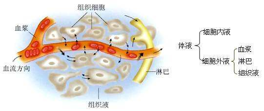
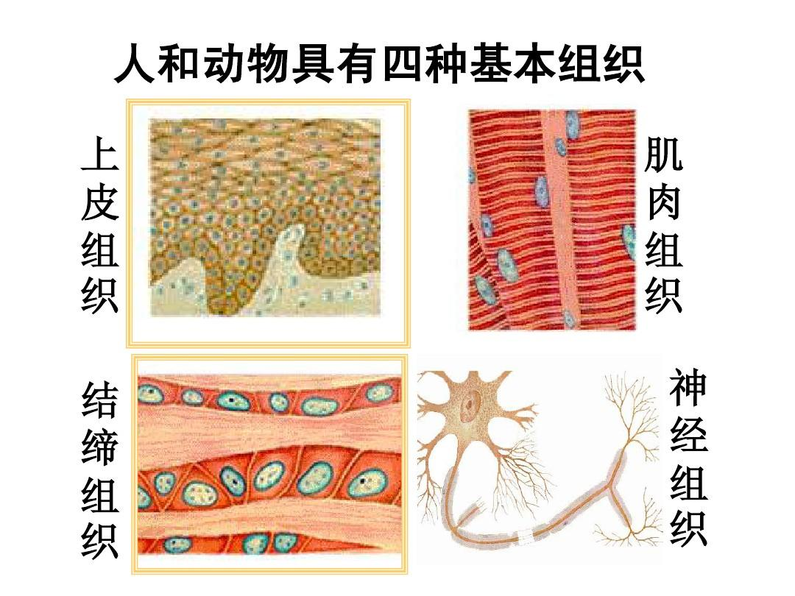
皮肤组织
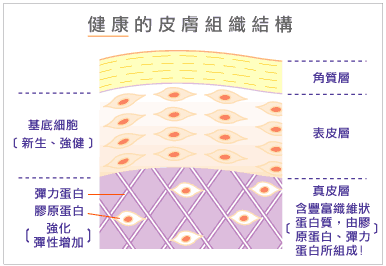
神经组织
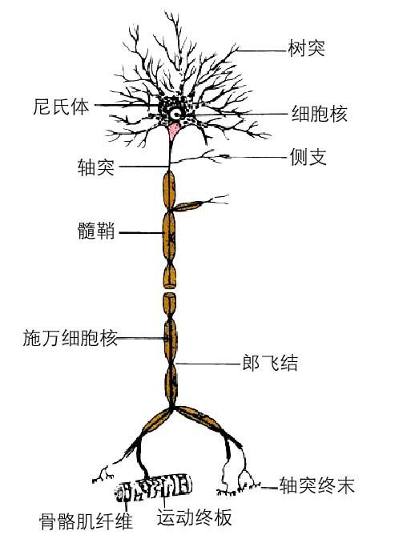
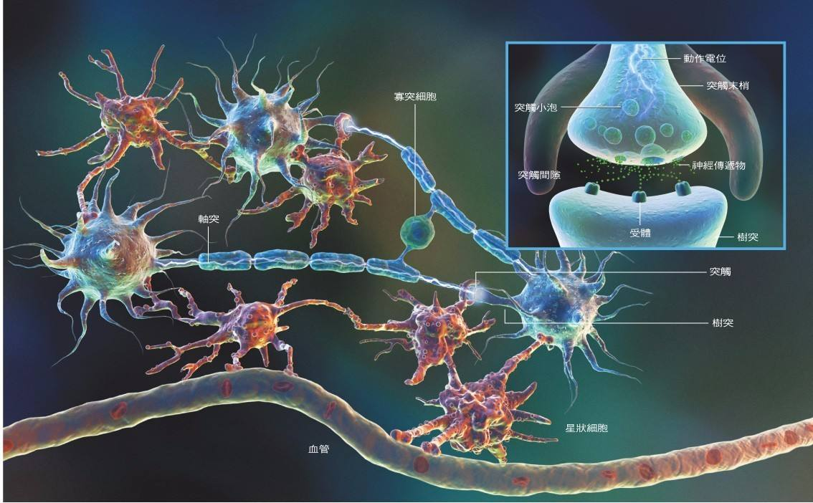
跨领域对象调用
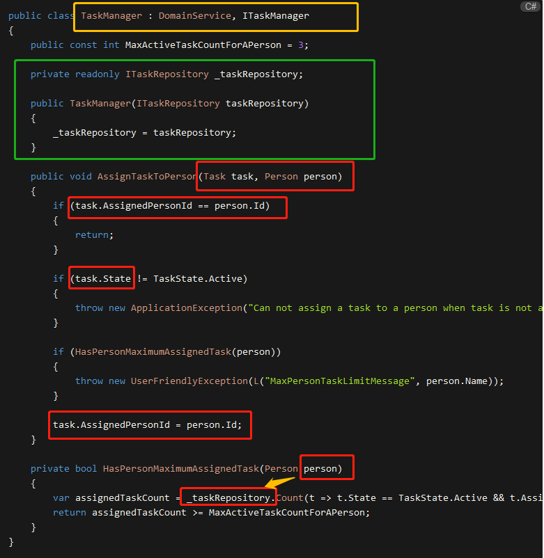

应用服务 细胞—>组织—>器官

应用服务
判断什么时候应该定义领域服务，什么时候应该定义应用服务，一个根本的判断依据是看需要封装的职责是否与领域相关。
纵横
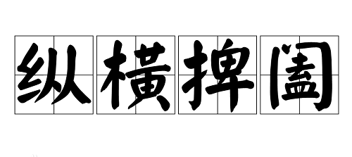
横切关注点 在应用服务中，我们往往需要和如下逻辑进行协作：
- 消息验证
- 错误处理
- 监控
- 事务
- 认证与授权
应用服务用于将领域(业务)逻辑暴露给展现层。展现层通过传入DTO(数据传输对象)参数来调用应用服务，而应用服务通过领域对象来执行相应的业务逻辑并且将DTO返回给展现层。因此，展现层和领域层将被完全隔离开来。在一个理想的层级项目中，展现层应该从不直接访问领域对象。
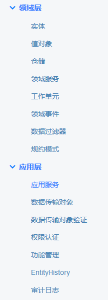
将以上内容视为基础架构问题。这些关注点与具体的业务逻辑无关，且在整个系统中，可能会被诸多服务调用（以便于重用），因此可以认为这些关注点为横切关注点。
从 【AOP】的角度看，所谓“横切关注点”就是那些在职责上是内聚的，但在使用上又会散布在所有对象层次中，且与所散布到的对象的核心功能毫无关系的关注点。【消息验证- 错误处理- 监控- 事务- 认证与授权】
与“横切关注点”对应的是“核心关注点”，就是与系统业务有关的领域逻辑。
例如订单业务是核心关注点，插入订单时的事务管理则是横切关注点。
横切关注点与核心关注点是分离的，因此与具体的业务无关。于是，我们可以得到应用服务设计的第一条原则：与横切关注点协作的服务应被定义为应用服务。
Use Case用户用例
我们在分析建模时，一个 Use Case 往往代表一个完整的业务场景。
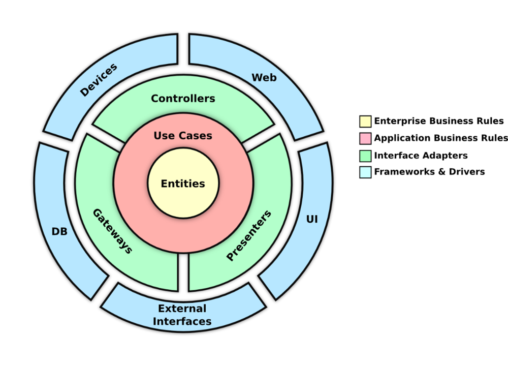
对外部的客户而言，DDD 的应用层代表了与客户协作的应用服务，接口表达的其实是业务的含义。
DDD 分层架构的主要目的是要将业务复杂度与技术复杂度分离，应用层扮演的正是这样的一条分界线。
从设计模式的角度讲，应用层的应用服务就是一个 Facade：
- 对外，它提供代表 Use Case 的整体应用；
- 对内，它负责整合领域层的领域逻辑与其他基础架构层面的横切关注点。
应用服务封装的业务含义，其实仅仅是一个转手的买卖，并不真正具有领域逻辑。因此可以得到应用服务设计的第二条准则：不包含领域逻辑的业务服务应被定义为应用服务。
与领域的交互
第二条设计准则容易造成困惑。虽然单个领域行为确定无误地属于领域逻辑，然而将多个领域行为组合起来的协调行为，算不算是领域逻辑呢？例如对于“下订单”用例而言，如果我们在各自的领域对象中定义了如下行为：
- 验证订单是否有效
- 提交订单
- 移除购物车中已购商品
- 发送邮件通知买家
这些行为的组合正好满足了“下订单”这个完整用例的需求，同时也为了保证客户调用的简便性，我们需要对这四个领域行为进行封装。由于这些行为可能牵涉到不同的领域对象，因此只能定义为服务。
那么，这个服务应该是应用服务，还是领域服务？
《领域驱动设计模式、原理与实践》一书将这种封装认为是与领域的交互。该书作者给出了自己的一个判断标准：
决定一系列交互是否属于领域的一种方式是提出“这种情况总是会出现吗？”或者“这些步骤无法分开吗？”的问题。如果答案是肯定的，那么这看起来就是一个领域策略，因为那些步骤总是必须一起发生。
然而，如果那些步骤可以用若干方式重新组合，那么可能它就不是一个领域概念。
但我认为这种判断标准并不准确，至少并非充分必要条件。
也就是说，可以分开的领域行为组合在一起未必一定就是应用服务；
反过来，一个应用服务封装的领域行为组合也未必一定具有高内聚性。
如果这个判断标准不成立，在牵涉到领域逻辑的协调与交互时，领域逻辑与应用服务的边界就变得非常模糊了。一种观点是在微服务架构中，由于一个 Bounded Context 的粒度变得越来越小，且代表了跨进程的物理边界，使得区分领域服务与应用服务变得不再那么重要了。
换言之，因为微服务的粒度较小，又有着严格的边界控制，业务复杂度与技术复杂度二者的混合产生的负面影响也变得越来越小。
可以给应用服务做如下边界定义：
与横切关注点进行协作的只能是应用服务
若应用服务要与领域交互，则尽可能将与横切关注点无关的纯领域行为往领域服务下推
基于这个定义，以前面的“下订单”用例为例，对这四个领域行为的封装就应该放在领域服务中（关于邮件通知功能是否属于领域服务，后面有深入讨论）。
倘若封装在领域服务中的整体逻辑还需要事务管理，又或者在执行下订单任务之前，需要进行身份认证与授权，则需要将这些逻辑的整合放到应用服务中。
领域服务与应用服务
我们将看一下领域域服务与应用服务有什么不同。人们常说，领域服务是承载那些不自然地适合实体和值对象的领域知识。但是，还有另一个原因可能需要引入域服务。这个原因与领域模型隔离有关。那么，领域服务与应用服务有何不同？这两个概念都假设无状态类可以在领域实体和值对象之上工作，但这几乎与它们的相似性有关。它们之间的主要区别在于领域服务包含领域逻辑而应用服务不包含领域逻辑。
领域逻辑是与业务策略相关的所有内容。因此，领域服务以与实体和值对象相同的方式参与策略实施过程（业务规则）。而应用服务是实现由实体和值对象所做出的编排方式编排。我们来看这个例子：
xxxxxxxxxxpublic void WithdrawMoney(decimal amount)//是应用服务的一部分，并且包括一个面向客户的API。{//它告诉ATM实体首先分配一些金额， _atm.DispenseMoney(amount); //然后要求它用佣金进行金额计算 decimal amountWithCommission =_atm.CalculateAmountWithCommission(amount); //将计算结果通过支付网关收费 _paymentGateway.ChargePayment(amountWithCommission); _repository.Save(_atm);//最后将实体保存到数据库。}是否需要将前两行有关领域知识的代码提炼到领领域服务中？例如，像这样：
xxxxxxxxxx//是应用服务的一部分，并且包括一个面向客户的API。它告诉ATM实体首先分配一些金额，，，public void WithdrawMoney(decimal amount){//然后要求它用佣金进行金额计算 decimal amountWithCommission =_atmService.DispenseAndCalculateCommission( _atm, amount); //将计算结果通过支付网关收费 _paymentGateway.ChargePayment(amountWithCommission); _repository.Save(_atm);//最后将实体保存到数据库。}public sealed class AtmService // Domain service{//没有类似if语句导致的分支以表示代码需要做出任何判断（这就代表业务决策）它只是要求领域实体做两件事。 public decimal DispenseAndCalculateCommission(Atmatm, decimal amount) { atm.DispenseMoney(amount); returnatm.CalculateAmountWithCommission(amount); }}
xxxxxxxxxxpublic void WithdrawMoney(decimal amount){//假设由于余额不足而导致支付费用失败，如果发生这种情况，我们不应该分配任何现金。 if (!_atm.CanDispenseMoney(amount)) //替换掉_atm.DispenseMoney(amount); return; //But 决策过程仍然存在于Atm。由实体单独决定是否可以分配任何资金。 //应用程序服务只是协调该决定，并继续执行或不执行。 decimal amountWithCommission =_atm.CalculateAmountWithCommission(amount); //然后要求它用佣金进行金额计算 Result result = _paymentGateway.ChargePayment(amountWithCommission);//将计算结果通过支付网关收费 if (result.IsFailure) return; _atm.DispenseMoney(amount); _repository.Save(_atm);}但是，与第一个不同，不是Atm实体做出该决定。
这是应用服务本身。即使付款在此之前失败，现在也可以从Atm获取现金，领域实体不为我们保证此不变性了，并且在不违反实体隔离的情况下引入这样的不变性是不可能的，因为为了检查这个前提条件，它必须调用第三方服务。那么，在这种情况下该怎么办？这是领域服务可以提供帮助的地方。你可以将任何需要来自外部世界的额外信息的业务决策放入领域服务，并且因为以下原因而无法放入实体和值对象中实现：
- 我们仍然将尽可能多的逻辑放入实体中。例如，分配现金的行为仍然是Atm的责任。
- 我们仍然尝试尽可能地隔离域服务。例如，我们不会使它与存储库一起工作，因为它不需要做出业务决策。
- 引入服务的杂质和领域逻辑在这里是最低限度的。足以让它正常工作。
xxxxxxxxxxpublic void WithdrawMoney(decimal amount)//应用服务{ Atm atm = _repository.Get(); _atmService.WithdrawMoney(atm, amount); _repository.Save(_atm);}public sealed class AtmService // Domain service{//将任何需要来自外部世界的额外信息的业务决策放入领域服务 public void WithdrawMoney(Atm atm, decimal amount) { if (!atm.CanDispenseMoney(amount)) return; //分配现金的行为仍然是Atm的责任 decimal amountWithCommission = atm.CalculateAmountWithCommission(amount); Result result =_paymentGateway.ChargePayment(amountWithCommission); if (result.IsFailure) return; atm.DispenseMoney(amount); }}
益处
这种提取可能看起来有问题。这不仅仅是责任的转移而没有实际的好处吗？
- 但是，有一些好处。领域服务中的代码比应用程序服务中的代码更易于测试。
它具有较少的外部依赖性，因此我们需要使用较少的测试双精度来对其进行单元测试。这项服务当然不像实体那样可测试，但仍然如此。
第二个好处是，这样我们可以防止领域知识泄漏，并将所有领域逻辑保留在领域模型边界内，
这可能有助于提高可读性。
我不会说在这个特定的例子中，这两个好处起了很大作用。在应用服务本身中保留一些不适合实体的逻辑并且不会每次都引入单独的领域服务，这是非常好的。但是，请确保此逻辑不会重复，并且不太复杂。如果您发现违反DRY原则或应用服务变得过于复杂，您需要明确引入领域服务。

总结
- 领域服务带有领域知识; 应用服务没有（理想情况下）。【业务逻辑】
- 领域服务包含不自然地适合放入实体和值对象的领域逻辑。 【跨对象】
- 当你发现某些逻辑无法放入实体/值对象时，引入领域服务，否则会破坏它们与外界的隔离性。
跨不同细胞
- 组织构成器官，器官构成系统。 具体的说： 组织 是由形态相似、功能相同的一群“细胞和细胞间质组合”起来，是构成“器官的基本成分”。
- 器官 上述四种“组织排序结合”起来，组成具有一定形态并完成一定生理功能的结构，称为器官，例如胃、肠等。
- 系统 许多“器官联系”起来，成为能完成一系列连续性生理机能体系，称为系统。
微服务 细胞—>组织—>器官—>系统
神经系统

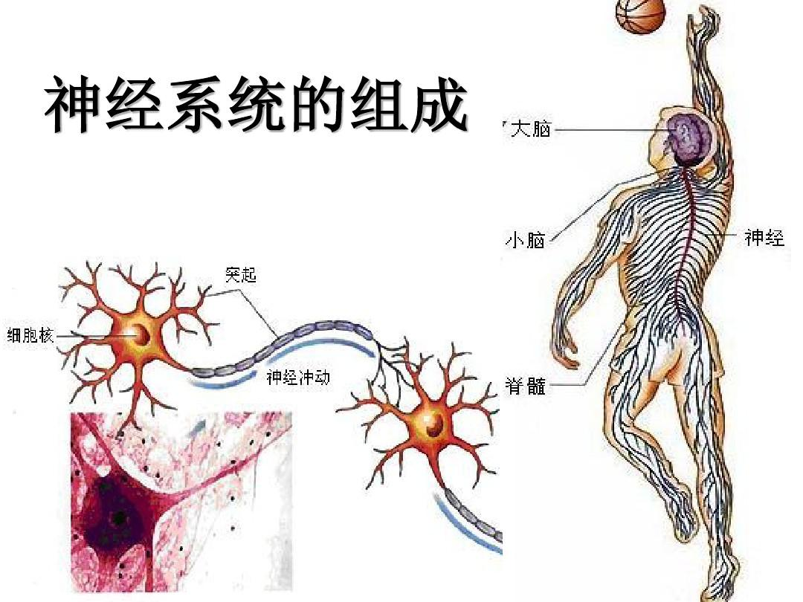
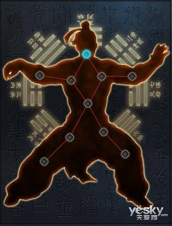
消化系统
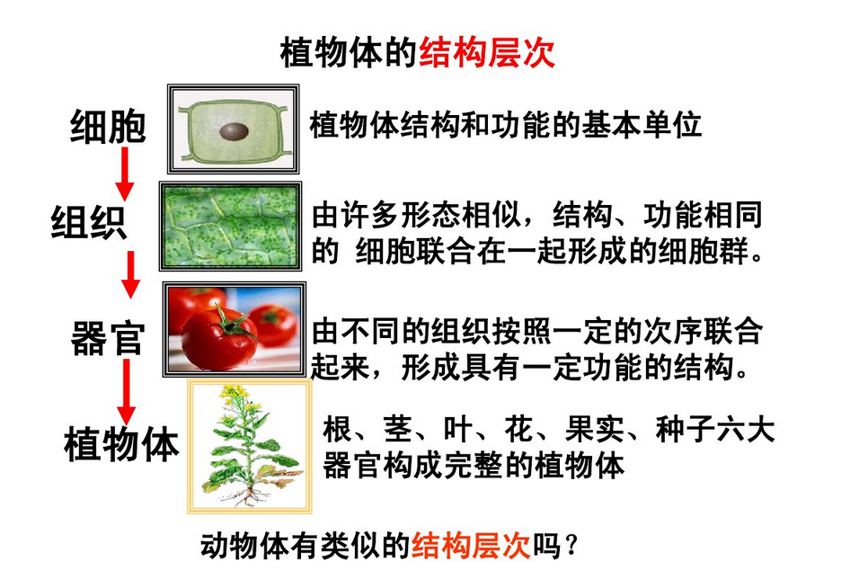
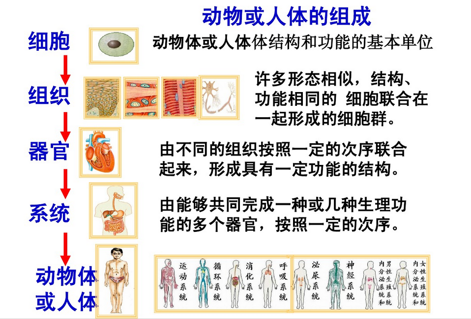
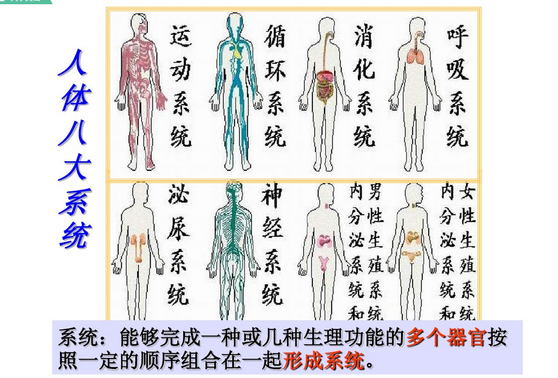
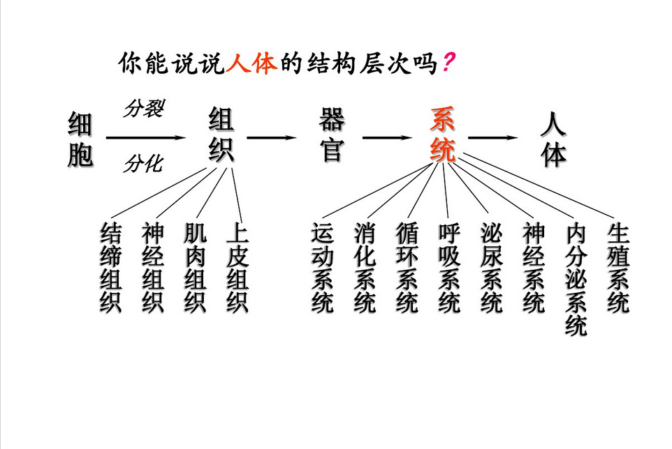
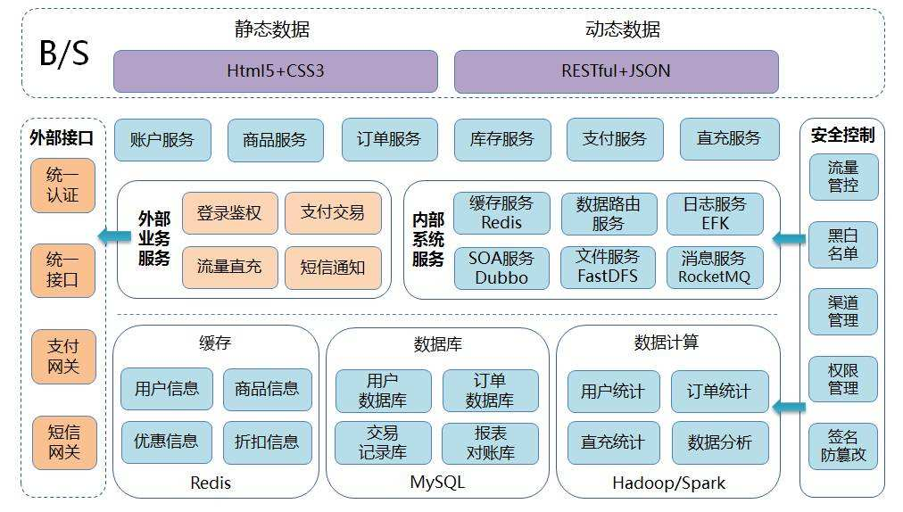
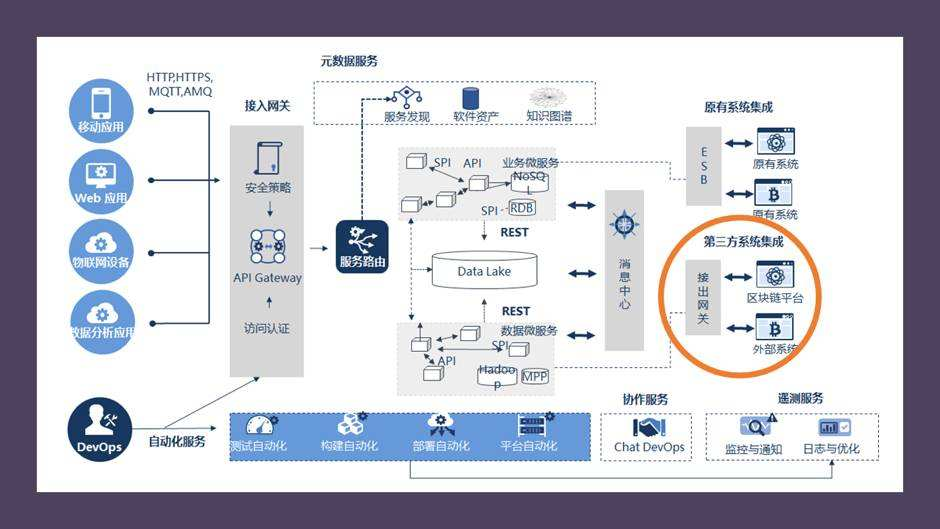
| 领域对象 | 细胞 | Domain-Model/Repository | 对象 | 字段属性方法 |
|---|---|---|---|---|
| 领域服务 | 组织 | TaskManager/DomainService | 模块 | 业务逻辑/知识 |
| 应用服务 | 器官 | TaskController/ApplicationService | 功能块 | AOP横切,顺序 |
| 微服务单应用 | 系统 | 服务 | 组合功能模块 | |
| 微服务系统 | 人体 | 服务集 | 系列家族服务 |